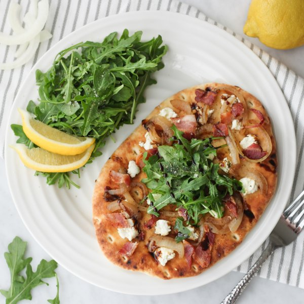

Bacon, Goat Cheese, Onion Pizza with Balsamic Glaze & Arugula Salad

Total Time
40 min
Nutrition (Per Serving)
684.9 kcalCalories
20.8 gProtein
67.4 gCarbs
36.5 gFat
Full nutrition table
| Calories | 684.9 kcal |
| Total fat | 36.5 g |
| Saturated fat | 17.1 g |
| Trans fat | 0.8 g |
| Cholesterol | 68.7 mg |
| Sodium | 736.5 mg |
| Carbohydrates | 67.4 g |
| Fiber | 3.1 g |
| Sugars | 13.2 g |
| Protein | 20.8 g |
| Potassium | 445.5 mg |
| Calcium | 188.2 mg |
| Iron | 4.7 mg |
| Vitamin A | 422.6 IU |
| Vitamin C | 12.2 mg |
| Vitamin D | 18.3 IU |
Cookware
Ingredients
- 1 (5 oz) pkgbaby arugula
- 4 slicesbacon
- 4flatbreads or naan
- 1 (4 oz) loggoat cheese
- 1lemon
- 1 mediumyellow onion
- balsamic vinegar
- black pepper
- brown sugar
- extra virgin olive oil
- salt
Steps
- Preheat oven to 400°F.
- Place vinegar and sugar in a small saucepan over medium-high heat; stir until sugar is dissolved. Continue to cook, stirring often, until reduced by about half, or until thick enough to coat the back of a spoon, 10-15 minutes.½ cup balsamic vinegar
1 tbsp brown sugar - Meanwhile, preheat a large skillet over medium-high heat.
- Coarsely chop bacon and transfer to the skillet. Cook, stirring occasionally, until crispy, 4-5 minutes.4 slices bacon
- While the bacon is cooking, peel, halve, and thinly slice onion into half rings.1 medium yellow onion
- Using a slotted spoon, remove crispy bacon from the skillet and transfer to a small bowl (leave cooking liquids in the skillet).
- Return skillet to medium-high heat; add onions and cook, stirring occasionally, until caramelized, about 7 minutes. Remove from heat.
- Place flatbreads on a large baking sheet pan and drizzle with oil; top each flatbread with crumbled goat cheese, bacon, and onion. Place baking sheet in the oven and bake until flatbread become golden and crispy, about 10 minutes.4 flatbreads or naan
2 tsp extra virgin olive oil
1 (4 oz) log goat cheese - Meanwhile, wash and dry arugula (skip if it came pre-washed). Transfer arugula to a large bowl along with oil, salt, and pepper; toss to combine the salad and set aside.1 (5 oz) pkg baby arugula
2 tsp extra virgin olive oil
⅛ tsp salt
⅛ tsp black pepper - Wash, dry, and slice lemon into wedges.1 lemon
- When pizzas are done, remove from the oven; top each with a small handful of arugula salad and drizzle on balsamic glaze.
- Divide pizzas and remaining arugula salad between plates. Serve with lemon wedges for squeezing over the salad. Enjoy!